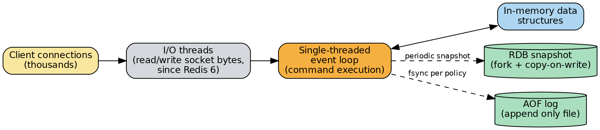
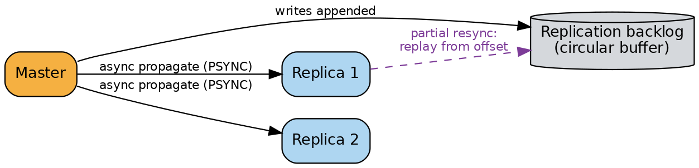
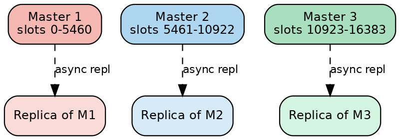

Redis
A system-design deep dive and interview study guide: internal architecture first, then math, diagrams, real-world usage, trade-offs, and follow-up interview questions.
Overview
Redis (REmote DIctionary Server) is an in-memory data structure store that doubles as a cache, a primary database, a message broker, and a streaming platform — you talk to it over a simple text-like protocol and it gives you back rich structures (strings, hashes, lists, sets, sorted sets, streams) instead of just bytes. It is fast — routinely serving hundreds of thousands to low millions of simple operations per second per core — for three compounding reasons: (a) all the "hot" data lives in RAM so there is no disk seek on the read/write path, (b) the algorithms behind every data type are deliberately chosen to be O(1) or O(log N), and (c) a single-threaded, event-driven core eliminates locking and context-switch overhead for command execution. The rest of this document goes straight into how that is built, before we ever get to "what do people use it for."
| Design choice | Why it makes Redis fast |
|---|---|
| All "hot" data lives in RAM | No disk seek on the read/write path |
| O(1)/O(log N) algorithms behind every data type | Predictable, low per-command CPU cost even as data grows |
| Single-threaded, event-driven core | Eliminates locking and context-switch overhead for command execution |
We'll walk through the internals in the order you'd actually need them to understand a request flowing through the system — the event loop first, then the data structures it operates on, persistence, memory eviction, replication, clustering, and transactional atomicity — before moving on to the math, diagrams, real-world usage, trade-offs, and interview questions.
Internal Architecture Deep Dive
1.1 The Single-Threaded Event Loop Model
What "event loop" means. Redis's core (src/ae.c, the "asynchronous event" library) is a reactor pattern implementation. Instead of spawning a thread or process per client connection (which does not scale past a few thousand connections and requires locks the moment two threads touch the same key), Redis keeps one thread that:
- Registers every client socket's file descriptor with the OS's I/O readiness mechanism —
epollon Linux,kqueueon BSD/macOS,evporton Solaris, or a portableselect()fallback. - Calls a blocking wait (
epoll_wait) that sleeps until one or more sockets are "ready" (readable, writable, or have an error). - Iterates over the ready file descriptors and invokes the registered callback for each one (read a command, write a reply, accept a new connection, fire a timer).
- Before going back to sleep, runs
beforeSleep()housekeeping: flush replication output buffers, process expired keys, write AOF buffers, etc. - Loops forever.
This is I/O multiplexing: one thread monitors thousands of sockets cheaply, and only does work when there is actually work to do — no busy polling, no per-connection thread stacks.
Why single-threaded command execution avoids lock contention. Every Redis data structure (hash table, skip list, quicklist, ...) is a plain, non-thread-safe C structure. If two OS threads could run HSET on the same hash concurrently, Redis would need mutexes (or lock-free structures) around every data structure, and contention on hot keys would serialize the very concurrency you were trying to buy. By construction, only one thread ever executes a command against the keyspace at any instant, so: no mutexes are needed on the data structures themselves; every command that doesn't block (no BLPOP semantics) appears atomic to every other client — this is what makes single commands, and later Lua scripts and MULTI/EXEC blocks, trivially atomic; and there are no race conditions, no deadlocks, and the code is dramatically simpler to reason about and debug.
Because most Redis operations are O(1)/O(log N) over in-memory structures, a single CPU core can execute them in the sub-microsecond-to-low-microsecond range — the bottleneck for a long time was not CPU, it was the cost of read()/write() syscalls and TCP/TLS handling per connection. That is precisely the part Redis later parallelized.
Multi-threaded I/O (Redis 6.0+). Since Redis 6, you can set io-threads N (and io-threads-do-reads yes) in redis.conf. This spins up N−1 extra "I/O threads" whose only job is to: read raw bytes off the socket and parse the RESP (REdis Serialization Protocol) request into a command + arguments, and/or serialize the reply and write raw bytes back to the socket. Crucially, the I/O threads never touch the keyspace and never execute a command. The main thread still does 100% of command execution, single-threaded, exactly as before. The I/O threads just take the network-syscall and protocol-parsing work off the main thread's plate so it isn't stalled by slow clients or TLS handshakes. This is why Redis's docs describe it as "multi-threaded I/O, single-threaded execution" rather than a general move to multi-threading. (TLS support for I/O threads was historically limited in Redis 6/7 and was improved in Redis 8.)

Worked example — request lifecycle for GET foo:
- Client opens a TCP connection; the accept handler (running on the main event loop) registers the new socket's fd for read events.
- Client sends
*2\r\n$3\r\nGET\r\n$3\r\nfoo\r\n(RESP-encodedGET foo). The bytes land in the kernel's socket receive buffer. epoll_wait()returns, reporting the client fd as readable.- An I/O thread (or the main thread, if
io-threads 1) reads the bytes into the client's query buffer and parses the RESP array into the command nameGETand argumentfoo. - The main thread dequeues the parsed command, looks it up in the command table, runs ACL/auth and argument-arity checks, then calls the command's handler (
getCommand→lookupKeyReadWithFlags→ a hash-table lookup for the key"foo"in the current DB's dict). - If found, the value object is serialized into a RESP bulk string reply (
$3\r\nbar\r\n) and appended to the client's output buffer; if not found, a RESP null ($-1\r\n/_\r\nin RESP3) is queued instead. - The main thread (or a write I/O thread) writes the buffered reply back to the socket once it is writable.
- Somewhere in this same event-loop tick (via
beforeSleep()), Redis may also: append the command to the AOF buffer if it was a write, feed the command to the replication stream, check the key's TTL, and run any due cron jobs (serverCron, ~10 times/sec by default) — expiring keys, resizing hash tables, updating stats.
A SET foo bar command follows the same path but additionally: (a) the write is appended to the AOF (if enabled), (b) the write is propagated to the replication backlog and any connected replicas, and (c) the key's "dirty" counter increments (used to trigger RDB save points like save 60 1000).
1.2 Core Data Structures and Their Complexity
Every Redis key is a redisObject (robj): a small header (type tag, internal encoding tag, an LRU/LFU field, a reference count, and a pointer to the actual payload). The "type" is what you see from TYPE key (string, list, hash, set, zset, stream); the "encoding" is the internal representation Redis actually chose (visible via OBJECT ENCODING key), and Redis silently upgrades encodings as data grows, trading memory for speed.
| Data Type | Internal Encoding(s) | Time Complexity | Notes |
|---|---|---|---|
| String | SDS (Simple Dynamic String) — five header variants (sdshdr5/8/16/32/64) sized to the string length |
GET/SET O(1) (excluding network transfer proportional to payload size); APPEND/STRLEN amortized O(1); GETRANGE/SETRANGE O(N) in the size of the range copied |
Redis never uses raw C strings (char *); it uses SDS (sds.h) instead, because: O(1) length (reading sds->len vs. O(N) strlen()); binary safety (values can contain embedded \0 bytes for protobufs/images/blobs — a plain C string would truncate at the first null byte); and amortized O(1) append via over-allocation — SDS doubles the buffer when growing a string under 1 MB, and grows by fixed 1 MB increments above that, so repeated APPEND calls need a realloc only occasionally. buf stays null-terminated for interoperability with C string functions even though the authoritative length lives in the header, not the terminator. |
| List | Small lists: bare listpack (below list-max-listpack-size, default up to 128 entries and small per-item size). Large lists: quicklist — a doubly linked list where each node is a listpack |
LPUSH/RPUSH/LPOP/RPOP O(1) (always operate on the head/tail node); LLEN O(1) (length is cached, not recomputed); LINDEX/LINSERT in the middle O(N) (must walk quicklist nodes, and scan within a listpack node, to reach the position) |
Redis 3.2 replaced the old design — a ziplist for small lists, or a genuine doubly linked linkedlist of individually malloc'd nodes for large lists (poor cache locality, ~16 bytes of pointer overhead per element) — with quicklist: each node is a compact, contiguous listpack packing multiple entries with no per-element pointers, giving O(1) push/pop at both ends like a real linked list but with the memory density of a flat array inside each node. Optional LZF compression of the "cold" middle nodes of a long quicklist (list-compress-depth) trades CPU for memory. |
| Hash | Small hashes: single listpack (below hash-max-listpack-entries, default 128 fields, and hash-max-listpack-value, default 64 bytes per field/value). Large hashes: real chained hashtable (dictEntry per field, open hashing with linked-list buckets) — conversion is one-way, it never shrinks back |
Listpack-encoded: HGET/HSET O(N) (N = number of fields, but small by construction); hashtable-encoded: HGET/HSET/HDEL O(1) average; HGETALL/HKEYS/HVALS O(N) regardless of encoding (must return every field) |
A listpack-encoded hash is a flat, contiguous array of field-value pairs with no hashing at all — lookups are O(N) but N is small and cache-friendly, which in practice beats a "real" hash table's pointer-chasing for tiny objects. |
| Set | Three possible encodings: intset (every member an integer, small set ≤ set-max-intset-entries default 512 — a flat, sorted array of native integers); listpack (Redis ≥ 7.2, small sets with at least one non-integer member, default up to 128 entries/64 bytes per element — same flat, pointer-free layout as hash/list listpacks); hashtable (general-purpose encoding once a set outgrows the small-set thresholds) |
intset membership test O(log N) via binary search; insertion requires shifting the array — O(N) worst case, though N is bounded by the small-set threshold. hashtable SADD/SISMEMBER/SREM O(1) average |
Redis automatically promotes intset → listpack → hashtable (or intset → hashtable directly) as thresholds are crossed; it never demotes. |
| Sorted Set (ZSET) | Small sorted sets: one flat listpack of (member, score) pairs (≤ zset-max-listpack-entries default 128, 64-byte values). Larger sorted sets: a dual structure — a hash table mapping member → score, plus a skip list (zskiplist) keeping members ordered by (score, member) |
Listpack ZADD/ZRANGE O(N) (N tiny); large-ZSET ZSCORE O(1) via the hash table; ZADD and ordered operations O(log N) via the skip list; ZRANGEBYSCORE O(log N + M) for M results; ZRANK/ZREVRANK O(log N) |
Skip list mechanics: a probabilistic alternative to a balanced tree. The bottom level is an ordinary sorted linked list containing every element; each element is also promoted, with probability p = 1/4 per additional level, up to a capped maximum (ZSKIPLIST_MAXLEVEL = 32 in Redis) — higher levels have exponentially fewer nodes, forming "express lanes" that let a search skip over large chunks of the list, giving expected O(log N) search — the same asymptotic bound as a balanced binary search tree, with much simpler, lock-free-friendly insert/delete code (no tree rotations). Redis additionally stores a span value at each level of each node — how many level-0 nodes does this forward pointer skip over — so summing span while traversing lets Redis answer ZRANK/ZREVRANK in the same O(log N) traversal, without a separate structure. Worked example: inserting scores {1, 5, 9, 12, 20} — each ZADD does an O(log N) hashtable insert/update of member→score, an O(log N) skip-list search for the insertion point, O(1) random level generation via coin flips, and O(log N) pointer relinking at each level the new node participates in. A subsequent ZRANGEBYSCORE key 5 12 walks down through the express lanes to find the first node with score ≥ 5 (O(log N)), then walks forward at level 0 collecting nodes until score > 12 (O(M) for M results) — total O(log N + M), far better than a naive O(N) scan for large sets. |
| Bitmap | Not a distinct type — a Redis String interpreted as a raw array of bits | SETBIT/GETBIT O(1) — e.g. SETBIT key 7 1 computes byte index 7/8=0, bit offset 7%8=7, and flips that bit; BITCOUNT (population count over a range) O(N) in bits/bytes scanned, though Redis uses processor popcount instructions and SIMD-friendly loops to make it fast in practice |
Manipulated with SETBIT/GETBIT/BITCOUNT/BITPOS/BITOP. Extremely memory-dense: a flag for 1 billion users costs ~125 MB. |
| HyperLogLog (HLL) | Fixed 12 KB string (dense/sparse internal representation), regardless of whether you've counted 10 or 10 billion distinct items | PFADD O(1) per element; PFCOUNT O(1) with a small constant for a single key (cached, invalidated only when a register changes) and O(N) across N keys; PFMERGE (union of N HLLs, register-wise max) O(N) |
A probabilistic algorithm (Flajolet et al., refined by Google) for estimating the cardinality of a huge set with a standard error of about 0.81%. It hashes every element into a bit string and looks at the position of the leftmost 1 bit (length of the leading run of zero bits); 14 bits of a 64-bit hash select one of 16,384 registers, and the remaining 50 bits compute the run-of-zeros count for that bucket only, comfortably fitting a 6-bit register (max representable run ≈ 50); each register stores the maximum run length ever observed for its bucket, and averaging (harmonic-mean-style) across all 16,384 registers produces a much lower-variance estimate than any single register could — 16,384 registers × 6 bits = 98,304 bits = 12,288 bytes ≈ 12 KB. Since raw estimates are biased for small cardinalities, Redis switches to a Linear Counting estimator below roughly 2.5–3×m (≈ 40,000–50,000 for m = 16,384) and applies an empirically-fit polynomial bias correction near the crossover, so very small counts (a few hundred elements) are reported almost exactly right. |
| Stream | Radix tree (compressed prefix trie, rax) keyed by entry ID (<milliseconds>-<sequence>); each radix-tree leaf stores a listpack "macro node" holding a whole batch of consecutive entries (until it exceeds stream-node-max-bytes/stream-node-max-entries) |
XADD O(1) amortized; XRANGE/XREVRANGE O(log N) to locate the start plus O(M) to walk M results |
An append-only log of entries. Because consecutive IDs sharing a millisecond timestamp share a long common prefix, the radix tree compresses very well, which is why Streams are dramatically more memory-efficient than the same data modeled as, say, a sorted set + hash (real-world reports show roughly an order of magnitude less memory for equivalent data). Streams support consumer groups: each group tracks a last-delivered-id and a per-consumer Pending Entries List (PEL) — a dict of delivered-but-unacknowledged entry IDs with delivery time/count, enabling at-least-once processing with XREADGROUP/XACK/XCLAIM. |
1.3 Persistence: RDB vs. AOF vs. AOF Rewrite
Redis offers two independent, combinable persistence mechanisms (or none, for pure caching).
RDB (Redis Database) — point-in-time snapshotting. Triggered by SAVE (blocking), BGSAVE (background), or automatically by save <seconds> <changes> rules (e.g. save 60 1000 = snapshot if ≥1000 keys changed in the last 60s). Mechanism:
- Redis calls
fork(). The OS gives the child process its own virtual address space that initially shares the exact same physical memory pages as the parent (via copy-on-write, COW) — this is nearly instantaneous even for a huge dataset because no memory is actually copied yet. - The child process walks the entire keyspace and serializes it into a temporary binary RDB file.
- If the parent (still serving live traffic) modifies a page that the child hasn't finished reading yet, the kernel duplicates only that one 4 KB page — the child keeps seeing the old, consistent snapshot-time data; the parent's changes go to its own private copy. This is what makes RDB a true consistent point-in-time snapshot without ever pausing the main event loop for the bulk of the work.
- When the child finishes, it atomically renames the temp file over the old
dump.rdb.
The cost you do pay is the fork() call itself, which is proportional to the size of the process's page table (not the dataset), but can still stall the parent for milliseconds to occasionally over a second on very large instances with poor memory/CPU characteristics — this is the main operational risk of RDB.
AOF (Append Only File) — command logging. With appendonly yes, every write command is appended (in RESP format) to a log; replaying the log from the start reconstructs the dataset. The durability knob is appendfsync:
always:fsync()after every write batch, before acknowledging the client. Safest, slowest — but Redis performs group commit: if many clients pipeline writes concurrently, they can share a singlefsync()call, softening the cost.everysec(default): a background thread callsfsync()once per second; the main thread never blocks on disk. You can lose at most ~1 second of writes if the OS/box crashes.no: Redis never callsfsync()explicitly; the OS decides when to flush dirty pages (Linux typically flushes within ~30 seconds by default). Fastest, least durable — you can lose many seconds of data on an OS-level crash or power loss (though not on a Redis process crash alone, since the data is already in the OS page cache).
The durability-vs-performance trade-off, with the timing math: a spinning disk's fsync() typically costs on the order of several milliseconds (dominated by seek + rotational latency) while an SSD's costs roughly tens of microseconds to low single-digit milliseconds. If Redis had to do one fsync() per client write with no batching, throughput would be capped near 1 / fsync_latency writes/sec per fsync-serialized stream — e.g. ~150–250 writes/sec on a disk with a 4–6 ms fsync, vs. potentially tens of thousands/sec on fast NVMe SSDs. Group commit changes this: if K clients pipeline concurrently within one event-loop tick, one fsync() call can cover all K of their writes, so effective throughput becomes closer to K / fsync_latency. This is exactly why always is "very very slow" for a single unpipelined client but far more tolerable under concurrent load, and why everysec is the recommended default: it bounds worst-case loss to ~1 second while making the fsync cost basically invisible to the request path.
AOF rewrite (log compaction). An AOF that logs INCR counter 100 times has 100 log entries to replay just to reconstruct one key with value 100; a rewrite (BGREWRITEAOF, or automatic via auto-aof-rewrite-percentage/auto-aof-rewrite-min-size) produces the minimal command set (or, since Redis 7.0, an RDB-format "base" file) that reconstructs the current dataset, using the same fork+COW trick as RDB. Since Redis 7.0, AOF is a multi-part mechanism: a base file (RDB or AOF format) + one or more incremental files + a manifest file, all inside an appenddirname directory. During a rewrite, the parent immediately opens a new incremental file and keeps appending live writes to it while the forked child builds the new base file in the background — this avoids the old (< 7.0) design's need to buffer all concurrent writes in memory and write them twice.
Combining RDB + AOF (appendonly yes with periodic RDB snapshots too) gives you the best of both: AOF for near-zero data loss, RDB for fast restarts, compact backups, and (as covered next) supporting partial-resync after restarts.
1.4 Memory Management and Eviction Policies
When maxmemory is set and the limit is hit, Redis enforces a maxmemory-policy:
noeviction: reject new writes with an error once the limit is hit (reads still work). Default.allkeys-lru/volatile-lru: evict the least-recently-used key, from the whole keyspace or only from keys that have a TTL (Time To Live, an expiration) set, respectively.allkeys-lfu/volatile-lfu: evict the least-frequently-used key (whole keyspace / TTL-only).allkeys-random/volatile-random: evict a uniformly random key.volatile-ttl: evict the key with the nearest expiration time first.
The approximated LRU algorithm. Redis does not maintain a real LRU doubly-linked list threaded through every key (that would cost extra pointers per key and require list-splicing on every read, hurting the O(1) read path). Instead, each object's header stores a 24-bit "LRU clock" (seconds-resolution, updated on access). When eviction is needed, Redis:
- Randomly samples
maxmemory-samples(default 5) keys from the target pool (all keys, or only keys with a TTL). - Evicts whichever sampled key has the oldest LRU timestamp.
- Since Redis 3.0, sampled-but-not-evicted candidates are kept in a small "eviction pool" across invocations, so good candidates found in one round aren't forgotten before the next — this closes much of the gap to true LRU without the memory/CPU cost of an exact list.
The sampling math/trade-off: with a single random sample of size k out of N keys, the chance any specific very-stale key is chosen for consideration in one round is only k/N — but because the pool persists good candidates across many eviction rounds (and real workloads evict repeatedly, not just once), the effective accuracy converges much closer to true LRU than a single k/N draw suggests. Redis's own published comparisons show k=5 (default) is a reasonable approximation, and raising maxmemory-samples to 10 measurably narrows the gap to true LRU, at the cost of more CPU per eviction (you must fetch and compare more candidate keys). This is a classic accuracy-vs-CPU-per-eviction dial: bigger samples get closer to the "true" answer, smaller samples are cheaper. Redis exposes it precisely because the right point on that curve depends on the access-pattern skew of your workload (very skewed/Pareto-like access patterns need very little sampling to work almost perfectly).
LFU (Least Frequently Used, Redis 4.0+). True per-key access counters would need large integers and constant maintenance. Instead Redis reuses the object header's 24-bit field as: 16 bits for "last decrement time" + an 8-bit Morris counter (a classic probabilistic approximate-counting algorithm) that increments probabilistically, with the increment probability decreasing as the counter grows (governed by lfu-log-factor, default 10) — this lets 8 bits (0–255) represent access counts up into the millions logarithmically instead of saturating after 255 real accesses. The counter also decays: every lfu-decay-time minutes (default 1) without access, the counter is nudged down, so the algorithm adapts when a previously "hot" key goes cold.
1.5 Replication: Async, Backlog, PSYNC
Redis replication is leader-follower (master-replica), and asynchronous by default: the master applies a write locally, then streams it to replicas, without waiting for their acknowledgment before replying to the client. Replicas periodically (about once/second) send back an acknowledged replication offset so the master knows how caught-up each replica is; this enables the optional WAIT numreplicas timeout command for near-synchronous behavior on demand, without changing the default fire-and-forget fast path.
Every master has a pseudo-random replication ID (marking a "history" of the dataset) and a monotonically increasing replication offset (bytes of write-stream produced so far, incremented even with zero replicas attached). The pair (replication ID, offset) uniquely identifies an exact state of the dataset.
PSYNC and partial vs. full resync. When a replica (re)connects, it sends the master its last known (replid, offset) via the PSYNC command:
- If the master recognizes that
replidas current or historical, and the requested offset still exists in the master's replication backlog (a fixed-size in-memory circular buffer of recent write-stream bytes, defaultrepl-backlog-size1 MB, tunable), the master performs a partial resynchronization: it streams just the missing bytes from the backlog. Fast, cheap, no RDB transfer needed. - Otherwise, a full resynchronization happens: the master starts a background RDB save (or, with
repl-diskless-sync, streams the RDB directly over the socket without touching disk), buffers new writes arriving during the save, transfers the RDB to the replica, and finally streams the buffered writes. The replica loads the RDB wholesale, then applies the streamed tail.

Backlog sizing is a direct trade-off: it must be large enough to cover (expected max disconnect duration) × (write throughput in bytes/sec), or a routine network blip forces an expensive full resync instead of a cheap partial one — the default 1 MB is frequently too small for busy production masters and is commonly raised into the 100s of MB.
Since Redis 4.0, a promoted replica retains a secondary replication ID referencing its old master's history and the offset at which it was promoted, so replicas reconnecting after a failover can still attempt a partial resync against the new master using the old master's ID/offset lineage — avoiding an unnecessary full resync cluster-wide right after a failover.
1.6 Redis Cluster: Hash Slots, Resharding, Failover
Redis Cluster shards data across multiple masters (each optionally with its own replicas) using hash slots, not consistent hashing rings. The keyspace is divided into a fixed 16,384 slots; every key is deterministically mapped to a slot via HASH_SLOT = CRC16(key) mod 16384 (CRC16 = a 16-bit Cyclic Redundancy Check, a fast, well-distributed hash — Redis uses the CCITT/XMODEM variant). Each master owns a subset of the 16,384 slots (e.g., 3 masters might each own ~5,461 slots); clients (or a smart client library) cache a slot→node map and route each command directly to the owning master. Hash tags — the substring between { and } in a key — let you force related keys onto the same slot (and hence the same node) for multi-key operations: {user:1000}:profile and {user:1000}:orders both hash only on user:1000, landing in the same slot.

Why 16,384 and not the full 65,536 that a 16-bit CRC could address? Three intertwined reasons, from Redis's own design discussion:
- Gossip message size. Every cluster node periodically gossips its view of slot ownership to every other node as part of the heartbeat (PING/PONG) messages over the cluster bus (a separate binary protocol on port
+10000). That message includes a bitmap with one bit per slot. At 16,384 slots that's exactly 2 KB per heartbeat; at 65,536 it would be 8 KB — 4× more bytes, sent continuously, node-to-node, in an all-to-all gossip mesh (O(N2) node pairs). For clusters with many nodes this bandwidth/CPU cost compounds badly, while 16,384 stays cheap. - Node-count reality. Redis Cluster is not designed to scale to tens of thousands of masters — realistically it targets up to roughly 1,000 nodes. At 1,000 masters, 16,384 slots still gives ~16 slots/node of placement granularity, which is fine; you don't need 65,536 slots' worth of granularity for a cluster that will never have anywhere near 65,536 nodes.
- Cheap arithmetic either way, but message size dominates the decision — 16,384 (214) keeps the modulo/AND operation trivial (
crc16(key) & 0x3FFF) while keeping the gossip payload small; doubling it to 65,536 buys essentially no practical benefit at real cluster sizes while measurably taxing the gossip protocol.
Resharding. An operator (or redis-cli --cluster reshard) moves a slot from node A to node B by: marking the slot MIGRATING on A and IMPORTING on B (CLUSTER SETSLOT), then migrating keys one-by-one with MIGRATE. While a slot is mid-migration, if A gets a request for a key that has already moved, it replies with an -ASK redirect (temporary, this-request-only: the client sends ASKING then retries against B); once all keys are moved, CLUSTER SETSLOT <slot> NODE B finalizes ownership and future requests to that slot get a normal, sticky -MOVED redirect instead.
Master-replica failover inside a cluster. Nodes gossip liveness continuously; if a node stops responding within cluster-node-timeout, the observing node marks it PFAIL ("possibly failed") and gossips that suspicion. Once a majority of masters agree a node is down, it's promoted to FAIL (confirmed), and one of the failed master's replicas holds an election, requesting votes from the surviving masters; upon receiving votes from a majority, it promotes itself to master and announces the new slot ownership via gossip. Because this requires a majority of masters to agree, a cluster needs at least 3 masters to tolerate a single node/network failure safely (with 3 masters, quorum is 2; with 5, quorum is 3), and cluster-require-full-coverage (default yes) makes the whole cluster refuse traffic if any slot has no reachable owner, prioritizing consistency of "don't silently serve incomplete data" over blanket availability (this is itself tunable).
1.7 Transactions and Lua Scripting Atomicity
MULTI/EXEC. MULTI puts a connection into a "queueing" mode: subsequent commands on that connection are validated and queued, not executed, until EXEC is issued. Because Redis is single-threaded, once EXEC starts, the entire queued batch runs back-to-back with no other client's commands interleaved — that's the whole atomicity guarantee, and it falls out for free from the execution model rather than needing a special transaction engine. Two caveats: (1) a command that fails at queue time (unknown command, wrong arity) aborts the whole transaction before EXEC; (2) a runtime error in one queued command (e.g., INCR on a string that isn't a number) does not roll back the other commands — Redis transactions are not "all or nothing" on runtime errors, only atomic in the sense of uninterrupted execution. WATCH key adds optimistic-locking (compare-and-swap): if a watched key changes between WATCH and EXEC, the whole transaction is aborted (returns null) so the client can retry.
Lua scripting (EVAL/EVALSHA, or FUNCTION since Redis 7.0). A Lua script runs to completion as a single atomic step from every other client's point of view — again, simply because the single main thread cannot interleave anything else while the script runs. This makes Lua strictly more powerful than MULTI/EXEC for logic like "read a value, branch on it, then conditionally write" (impossible inside a plain MULTI/EXEC block, since queued commands can't see intermediate results), at the cost of a real operational risk: a slow or infinite-looping script blocks the entire server, including replication and all other clients, for its whole duration (mitigated by lua-time-limit, and by preferring read-only script variants — EVAL_RO/FUNCTION read-only flags — where possible).
System-Design View: End-to-End Walkthroughs
A SET/GET pair through the event loop
- Connection & framing. Client opens (or reuses, via connection pooling) a TCP connection; commands arrive RESP-encoded.
SET session:42 "alice" EX 3600arrives. An I/O thread (ifio-threads> 1) or the main thread reads and parses it.- Main thread executes: hash the key into the main dict, insert/replace the
robj, set the key's expiration entry in the expires dict, mark the dataset "dirty." - Side effects queued in the same event-loop tick: append the command to the AOF buffer (if enabled), propagate it verbatim (or as a deterministic equivalent) to the replication backlog and any connected replicas' output buffers.
- Reply
+OK\r\nqueued to the client's output buffer, flushed on the next writable-socket event. - Later,
GET session:42arrives on a (possibly different) connection; main thread checks the expires dict first (lazy + periodic active expiration both apply), finds it not expired, does an O(1) dict lookup, and returns the value as a RESP bulk string — no disk I/O anywhere on this path unless a swap/OOM condition exists.
A cluster-mode request with a redirect
- A smart client library computes
slot = CRC16("order:9981") mod 16384 = 5798and consults its cached slot map: slot 5798 → Node A. - It sends
GET order:9981directly to Node A. - Suppose slot 5798 was reassigned to Node C moments earlier (resharding completed). Node A no longer owns it and replies:
-MOVED 5798 10.0.4.12:6379 - The client updates its local slot-map cache (5798 → Node C) and re-issues
GET order:9981against10.0.4.12:6379, which now serves it normally. - Contrast with an in-flight migration: if slot 5798 is currently
MIGRATINGfrom A to C and this particular key has already been moved but not yet finalized cluster-wide, A replies-ASK 5798 10.0.4.12:6379instead. This time the client sendsASKINGimmediately followed byGET order:9981to C — a one-shot redirect that does not update the client's slot cache, because the slot as a whole isn't owned by C yet, only this individual key has already migrated.
The Math
3.1 HyperLogLog Error Rate
where m is the number of registers. Redis fixes m = 16,384 = 214 (14 bits of a 64-bit hash select the register): RSE ≈ 1.04 / √16384 = 1.04 / 128 ≈ 0.008125 = 0.8125% ≈ 0.81%
Practically: for a true cardinality of 1,000,000, one standard error is ≈ 8,125 elements, so the estimate should typically land within roughly ±0.81% (≈ 991,875 to 1,008,125) of the true value, with roughly 2 standard errors (≈ ±1.6%) covering the great majority of runs (~95%) under the usual near-Gaussian-error assumption for large N. Redis additionally uses a Linear Counting estimator below ~2.5–3×m and a polynomial bias correction near that crossover, so very small counts — a few hundred — tend to be far more accurate than the asymptotic 0.81% figure would suggest.
Matching Redis's documented fixed HLL size — 12 KB whether you've counted 10 or 10 billion distinct items.
3.2 Approximate-LRU Sampling Accuracy vs. Sample Size
where k =
maxmemory-samples (default 5) and N = size of the candidate keyspace (all keys, or only keys with a TTL).
There's no closed-form "accuracy %" Redis publishes, but the mechanism gives an intuitive bound: each eviction round considers k independently drawn candidates, refreshed against a small persistent "best candidates" pool across rounds since Redis 3.0. Because eviction happens repeatedly (not once) and the pool retains near-misses, the cumulative probability that truly stale keys eventually get evicted (rather than the model producing a durably wrong long-run ranking) rises quickly with either more rounds or a larger k. Redis's own benchmarking shows k=5 (default) already tracks true LRU well under realistic (Pareto/power-law) access patterns, and k=10 closes most of the remaining gap at roughly double the per-eviction CPU cost (2× the keys to fetch and compare) — a straightforward CPU-vs-precision dial rather than a fixed formula.
3.3 Memory Overhead per Key
+ robj header for the key wrapper ≈ 16 bytes
+ SDS header + bytes for the key itself ≈ 3–17 bytes header + key length
+ robj header for the value wrapper ≈ 16 bytes
+ SDS header + bytes for the value itself ≈ 3–17 bytes header + value length
Summed, that's commonly cited as ~70–90 bytes of pure metadata overhead per key-value pair, before counting the actual payload bytes — plus allocator rounding (jemalloc/tcmalloc round each allocation up to the nearest size class, e.g. 8/16/32/48/64/80/96..., which can add a few more bytes of "waste" per allocation). This is why storing millions of tiny keys (e.g., one key per user-attribute) is often far more memory-expensive than packing the same data into fewer hash/listpack-encoded keys.
3.4 Replication Backlog Sizing
Example: a master sustaining 5 MB/sec of write traffic, with network blips that can occasionally last up to 60 seconds, needs a backlog of at least 5 MB/s × 60s = 300 MB to avoid forcing a full RDB resync (which itself costs a
fork(), a full snapshot transfer, and a load on the replica) every time such a blip occurs. The default of 1 MB is adequate only for near-idle masters or sub-second blips.
3.5 Single-Core Throughput Math
If an O(1) hash-table
GET takes on the order of 1 microsecond of CPU time (typical order of magnitude for an in-memory hash lookup plus RESP encoding), that alone bounds throughput near ~1,000,000 ops/sec for that single core — consistent with commonly cited Redis single-instance benchmarks in the several-hundred-thousand-to-low-millions ops/sec range for simple commands.
Two things move real numbers below this ceiling: (a) network/syscall overhead per request when not pipelined (each round trip costs far more than 1 µs in practice, often tens of microseconds, which is exactly what pipelining and multi-threaded I/O attack), and (b) commands with worse complexity (O(log N), O(N)) simply take longer per call, directly lowering the ops/sec ceiling by the same inverse relationship. Pipelining N commands per round trip amortizes the fixed network cost across N operations, pushing achieved throughput much closer to the CPU-bound ceiling above.
CAP Theorem Placement
The CAP theorem says a distributed data store can only guarantee two of {Consistency, Availability, Partition tolerance} at any given moment during an actual network partition. Redis (in its replicated / Cluster form) leans AP in practice:
- Availability & Partition tolerance are prioritized over strict consistency. Replication is asynchronous by default: the master acknowledges a client's write as soon as it's applied locally, without waiting for any replica. If the master then crashes before that write reaches a replica, and a replica is promoted, that acknowledged write is silently lost — the classic AP trade-off. The system stays available (a new master takes over quickly) but sacrifices durability/consistency of the most recent writes.
- Redis Cluster's default
cluster-require-full-coverage yespulls a bit toward C for coverage (it refuses to serve if any slot is unreachable, rather than serving a partial/degraded view) — but this is a narrow, configurable safety net, not a general strong-consistency guarantee; it can be turned off in favor of maximum availability. - Stronger consistency is available on demand, not by default: the
WAIT numreplicas timeoutcommand lets a client require that N replicas acknowledge a write before considering it durable, closing much of the failure window — but Redis's own documentation is explicit that this still does not make the system a genuine CP system: it reduces the probability of losing an acknowledged write to specific, harder-to-trigger failure modes, it does not eliminate it. - A single, non-replicated Redis instance isn't meaningfully "CAP-classified" at all — CAP is a statement about behavior during a network partition between replicated nodes, and a lone instance has no partition to speak of; it's simply CA-by-vacuity (fully consistent and available until it dies, with no distributed component).
Bottom line for interviews: say "Redis defaults to AP-leaning behavior via asynchronous replication — it favors staying available and accepting writes even when replicas are behind or unreachable, at the cost of being able to lose the last few acknowledged writes on an unclean failover. You can dial toward stronger consistency with WAIT, synchronous-ish semantics, or min-replicas-to-write, but you pay availability/latency for it, and even then it's a probabilistic safety improvement, not a formal consistency guarantee."
Real-World Usage Patterns
- Cache (cache-aside / read-through). The overwhelmingly common use: application checks Redis first, falls back to the database on a miss, writes the result back to Redis with a TTL.
maxmemory+allkeys-lru/allkeys-lfubound memory automatically. - Session store. Web/app session data keyed by session ID, often a Hash per session with a TTL (
EXPIRE) matching session lifetime — fast, and naturally self-cleaning. - Leaderboards. A Sorted Set per leaderboard:
ZADD leaderboard <score> <player>,ZREVRANGE leaderboard 0 9 WITHSCORESfor top-10,ZRANK/ZREVRANKfor "what's my rank" — all O(log N), which is why the skip-list structure matters so much here. - Rate limiting. Several patterns, all commonly implemented with Redis: (a) fixed-window counter via
INCR+EXPIRE; (b) sliding-window log using a Sorted Set keyed by timestamp, trimming old entries withZREMRANGEBYSCOREand counting withZCARD; (c) token bucket, typically implemented as a small Lua script (for atomicity) that refills tokens based on elapsed time and decrements on each request. - Pub/Sub and real-time messaging.
PUBLISH/SUBSCRIBE/PSUBSCRIBEfor fan-out messaging (chat, live notifications, WebSocket backplanes); for anything needing persistence/consumer groups/replay, Streams (XADD/XREADGROUP) are the more durable evolution of the same idea. - Queues / job processing. Lists (
LPUSH/BRPOP) for simple FIFO work queues, or Streams with consumer groups for at-least-once delivery with acknowledgment and retry (XACK/XCLAIM/XAUTOCLAIM) semantics closer to a lightweight message broker. - Distributed locks.
SET key value NX PX ttlas a basic mutual-exclusion primitive; multi-node variants (e.g., the Redlock algorithm) exist for higher-assurance locking across several independent Redis instances, though they remain a debated topic regarding formal correctness under clock/network faults. - Unique-count / analytics at scale. HyperLogLog for cheap approximate "unique visitors today" / "unique searches" counters across huge traffic without linear memory growth.
- Geospatial. Geo commands (
GEOADD/GEOSEARCH) are built on top of Sorted Sets using a geohash-encoded score, reusing the same skip-list machinery for range queries.
Trade-offs and Limitations
- Data must fit in RAM (for the core in-memory model) — you pay for capacity in the most expensive tier of memory, and dataset growth directly drives infrastructure cost; this is fundamentally different from disk-oriented databases.
- Single-threaded command execution can be blocked by slow commands. An O(N) command over a huge collection (
KEYS *,SMEMBERSon a multi-million-member set, unboundedSORT, a poorly written Lua script, orFLUSHALL) stalls every other client for its duration, because there is exactly one thread executing commands. The standard mitigation is to prefer cursor-based scanning (SCAN/HSCAN/SSCAN/ZSCAN) over blocking full-collection commands, and to keep Lua scripts short and read-mostly. - Asynchronous replication can lose acknowledged writes. As discussed under CAP, a write acknowledged to the client before it reaches any replica can vanish if the master fails before propagating it and a replica is promoted — an inherent risk unless you explicitly trade latency/availability for safety via
WAIT/synchronous-ish configuration. fork()-based persistence can cause latency spikes. Both RDB snapshotting and AOF rewrite fork a child process; on very large datasets or memory-constrained/overcommitted hosts, the fork itself (or subsequent copy-on-write page duplication under heavy write load) can introduce multi-hundred-millisecond to multi-second latency blips.- Cluster limitations. Multi-key operations (transactions, Lua scripts touching multiple keys,
MGETacross keys) only work atomically/efficiently when all involved keys hash to the same slot — which requires deliberate hash-tag key design; resharding and topology changes add real operational complexity; and a hard minimum of 3 masters is needed for automated quorum-based failover. - Memory fragmentation and overhead. As shown in the memory-overhead-per-key math above, many small keys carry meaningful fixed overhead independent of payload size — packing related fields into hashes/listpacks is often materially cheaper than one key per field.
- No native ACID transactions across independently-failing multi-key/multi-shard operations in Cluster mode — Redis's transactional guarantees are strongest within a single node's single-threaded execution, not across a sharded cluster.
Common Interview Questions
io-threads, while execution stays single-threaded by design.SET key value.epoll/I/O thread reads & parses RESP → main thread dequeues the command → hash-table insert/update → side effects queued in the same tick (AOF append, replication propagation, dirty counter update) → +OK reply queued → written back to the socket on next writable event.strlen), binary safety (values can contain \0), and amortized O(1) appends via pre-allocation (double under 1 MB, +1 MB increments above) — while staying null-terminated for interoperability with C string APIs.intset and other times hashtable via OBJECT ENCODING?intset (sorted array, O(log N) membership via binary search); sets that grow past thresholds or contain non-integers get promoted to listpack (small, mixed-type) or hashtable (large) — promotions are one-directional.ZSCORE lookups by member.ZRANK) in the same O(log N) traversal used for search, without needing a separate rank index.maxmemory-samples random keys (default 5) and evicts whichever has the oldest stored access timestamp, refining accuracy over time via a small persistent candidate pool (since Redis 3.0).lfu-log-factor), letting 8 bits (0–255) represent access frequencies that logarithmically span into the millions, and the counter periodically decays (lfu-decay-time) so stale "popularity" fades.everysec, but larger files, slower restarts). Most production setups combine both — AOF for durability, RDB for fast recovery/backups — since Redis prefers the AOF on restart if both are present (it's the more complete history).always fsyncs every write batch — safe but bounded near 1/fsync_latency writes/sec per serialized stream (worse on spinning disks with multi-millisecond fsyncs) unless group commit batches many concurrent clients into one fsync call; everysec fsyncs on a timer in a background thread, decoupling write latency from disk latency entirely at the cost of up to ~1 second of exposure on crash; no defers entirely to OS flush timing (~30s typical on Linux), fastest but least durable against OS/power failure.MOVED and an ASK redirect?MOVED is permanent/sticky: the slot has fully, finally moved to another node, and the client should update its cached slot map. ASK is temporary and per-request: it's issued mid-migration for a key that has already moved even though the slot as a whole hasn't finished migrating; the client must send ASKING then retry just this one command, without updating its persistent slot cache.MULTI/EXEC) truly atomic like a relational database transaction?EXEC) abort the whole batch. For real conditional/rollback-style logic, Lua scripting or WATCH-based optimistic concurrency is used instead.WAIT, min-replicas-to-write) and reduces — but does not eliminate — that risk, at a latency/availability cost.Key Takeaways
References
- Redis persistence (RDB, AOF, fsync policies, log rewriting) — Redis persistence documentation
- Redis replication (PSYNC, replication ID/offset, backlog, diskless replication) — Redis replication documentation
- Scale with Redis Cluster (hash slots, resharding, failover overview)
- Redis Cluster specification
- Key eviction (LRU/LFU policies, approximated LRU algorithm,
maxmemory-samples, Morris counter/LFU) — Redis eviction documentation - HyperLogLog data type documentation (12 KB, 0.81% standard error, PFADD/PFCOUNT/PFMERGE) — Redis HyperLogLog docs
- antirez (Salvatore Sanfilippo) — "Redis new data structure: the HyperLogLog" (original design writeup, 1.04/√m derivation, 16384 registers, linear counting + bias correction)
- Redis ZADD command reference (complexity)
- OBJECT ENCODING command reference (encoding names per type)
- Redis SDS internals reference
- Redis source,
sds.h— sdshdr5/8/16/32/64 struct definitions - antirez/listpack — listpack.md design notes
- Redis rate-limiting patterns tutorial (fixed window, sliding window, token bucket)
- GitHub discussion — why Redis Cluster uses 16384 slots (design rationale from the maintainers)
- WAIT command reference (synchronous-ish replication semantics and caveats)
- antirez — LFU eviction mode design notes